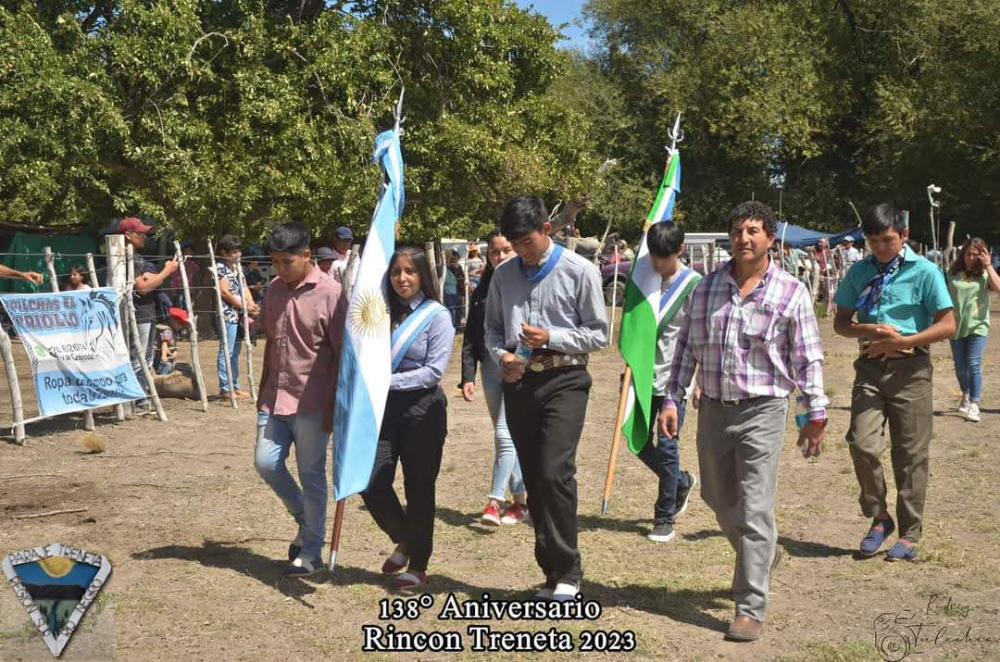
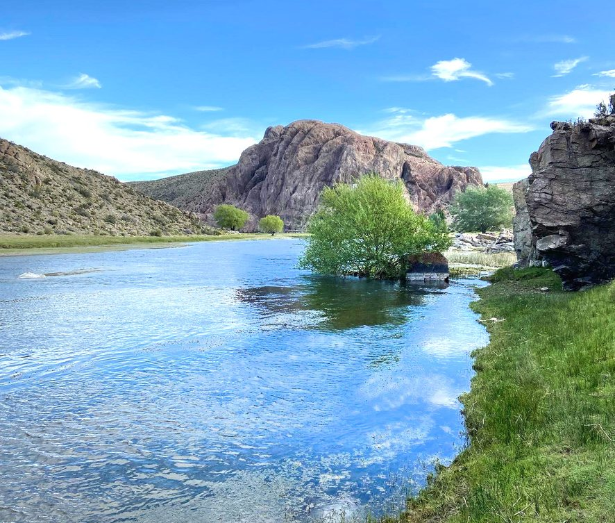
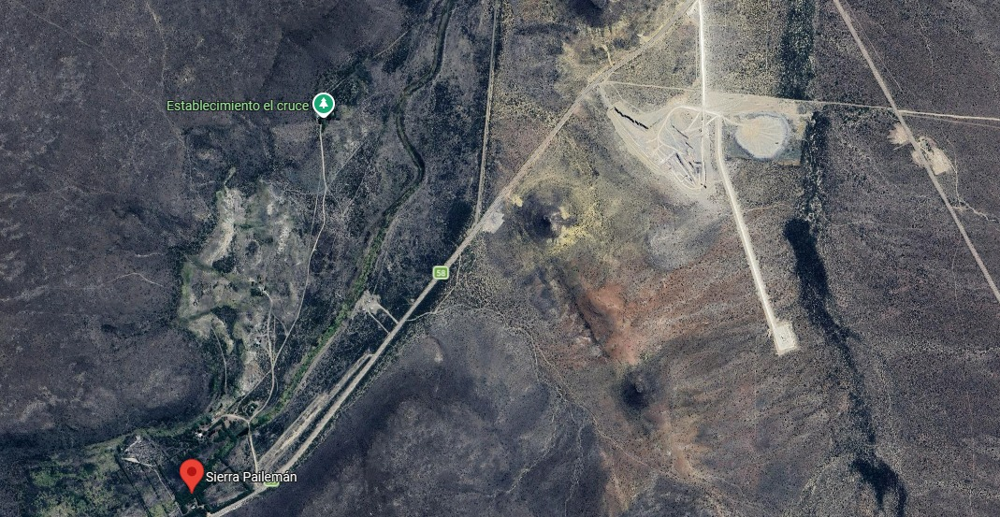
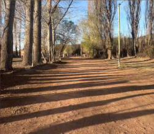
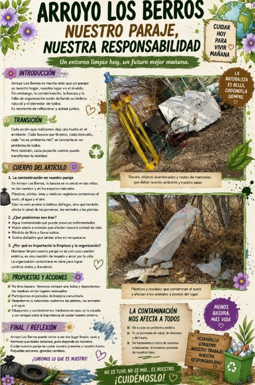
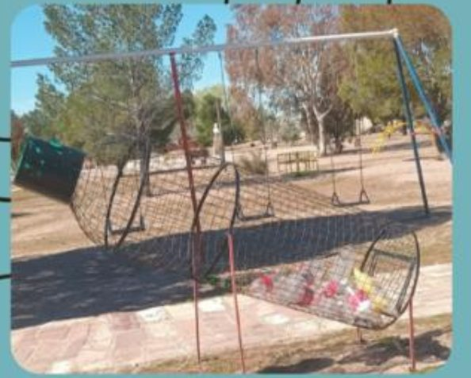
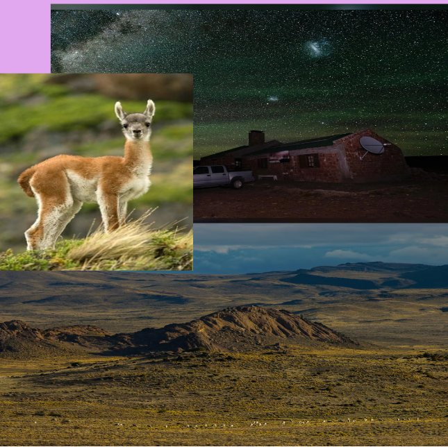
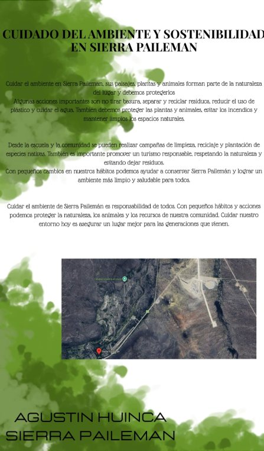
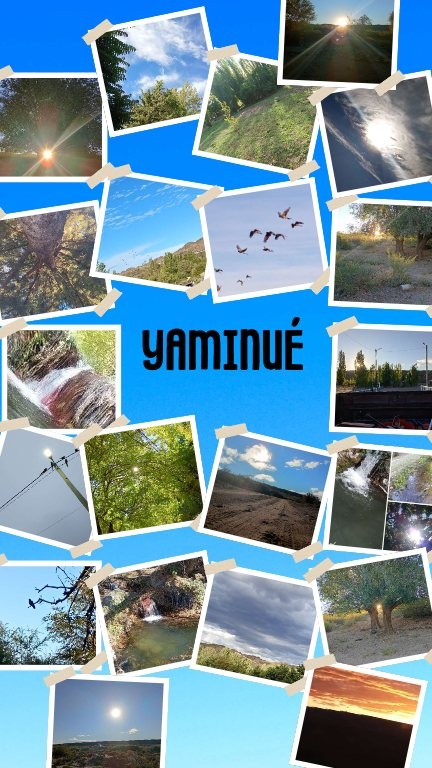
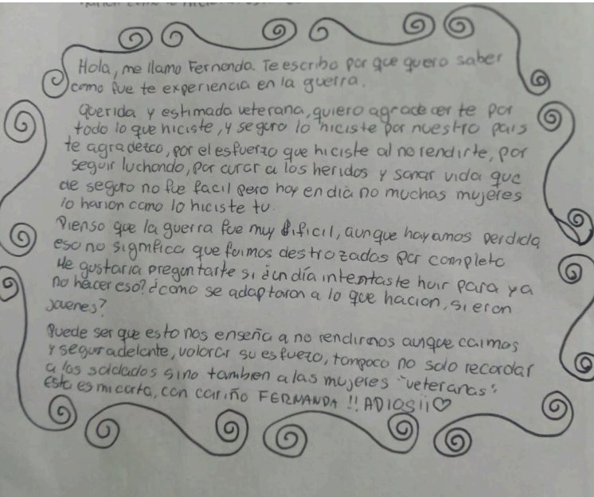

Tradición, encuentro y raíces de nuestra comunidad
Cada mes de febrero, el paraje Treneta se prepara para vivir una de las celebraciones más esperadas: la Fiesta del Paraje Treneta.
03 / 08
Parajes, comunidades y ambiente de la Patagonia rionegrina.

Cada mes de febrero, el paraje Treneta se prepara para vivir una de las celebraciones más esperadas: la Fiesta del Paraje Treneta.

Un recorrido por los puntos más interesantes que esperan ser visitados en la gran cita deportiva.

Inundaciones, explotación de la caliza y el cuidado del ambiente en Sierra Pailemán.

Un recorrido por los espacios más destacados de Yaminué: el barrio, las viviendas, el puente y el arroyo.

La contaminación en Arroyo Los Berros y propuestas para mejorar.

La separación de residuos es otro de los proyectos para reducir la contaminación, dar una segunda utilidad a los materiales y mantener la limpieza en el paraje.

La meseta parece vacía, pero si se mira más allá de lo superficial hay vida en cada rincón: animales, plantas y uno de los cielos más limpios del lugar.

Río Negro, la meseta de Somuncurá y la Escuela Rural N.º 69: el paraje contado por una estudiante de la ESRN Rural Virtual.

Un lugar tranquilo con un arroyo y paisajes que se disfrutan en verano.

Por el 2 de abril escribimos a las mujeres que formaron parte de la Guerra de Malvinas —enfermeras, instrumentadoras, comunicadoras y colaboradoras— para hacerles llegar las cartas que preparamos.